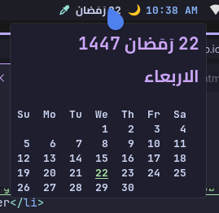

About
This module provides an accurate Hijri calendar with Multi-language support. It intelligently solves Pango's RTL alignment bugs by utilizing localized headers and monospace formatting, ensuring a pixel-perfect grid in your tooltips.

🌐 Supported Languages
Switch language using the -lang flag in your configuration:
| Flag | Language | Headers |
|---|---|---|
-lang ar | Arabic (Default) | Su Mo Tu... |
-lang en | English | Su Mo Tu We Th Fr Sa |
-lang fr | French | Di Lu Ma Me Je Ve Sa |
-lang de | German | So Mo Di Mi Do Fr Sa |
-lang it | Italian | Do Lu Ma Me Gi Ve Sa |
✨ Key Features
- Multi-language Support: Choose between Arabic, English, French, German, or Italian.
- Dynamic Month Length: Accurately handles 29/30 day months based on Hijri data.
- Offline Caching: Fetches data once per month for zero-lag performance.
- Authentic Islamic Events: Sunnah reminders like Ramadan, Eids, and White Days.
- Zero Dependencies: Pure Python script with minimal system footprint.
🛠️ Installation & Update
Deploy the script directly using this command:
mkdir -p ~/.config/waybar/scripts && curl -sSL https://raw.githubusercontent.com/ahmed-x86/waybar_hijri_calendar/main/hijri_waybar.py -o ~/.config/waybar/scripts/hijri_waybar.py && chmod +x ~/.config/waybar/scripts/hijri_waybar.py
⚠️ Crucial Update Step: If you are upgrading from an older version, you must clear the old cache file to apply the new format:
rm ~/.cache/waybar_hijri_cache.json
🖥️ Waybar Configuration
Add the following to your config.jsonc (change the lang flag to your preference):
"custom/hijri": {
"format": "{}",
"exec": "~/.config/waybar/scripts/hijri_waybar.py -lang ar",
"interval": 3600,
"return-type": "json",
"tooltip": true
}🎨 Styling (Themes)
Choose your favorite theme and add it to your Waybar style.css:
1. Catppuccin (Mocha)
/* Hijri Calendar - Catppuccin Mocha */
#custom-hijri {
color: #f9e2af;
font-weight: bold;
font-size: 14px;
padding: 0 8px;
transition: all 0.3s ease;
}
#custom-hijri:hover {
color: #fab387;
}
#custom-hijri.error {
color: #f38ba8;
background-color: rgba(243, 139, 168, 0.1);
}
2. Dracula
/* Hijri Calendar - Dracula */
#custom-hijri {
color: #bd93f9;
font-weight: bold;
font-size: 14px;
padding: 0 8px;
transition: all 0.3s ease;
}
#custom-hijri:hover {
color: #ff79c6;
}
#custom-hijri.error {
color: #f38ba8;
background-color: rgba(243, 139, 168, 0.1);
}
3. Nord
/* Hijri Calendar - Nord */
#custom-hijri {
color: #88C0D0;
font-weight: bold;
font-size: 14px;
padding: 0 8px;
transition: all 0.3s ease;
}
#custom-hijri:hover {
color: #81A1C1;
}
#custom-hijri.error {
color: #f38ba8;
background-color: rgba(243, 139, 168, 0.1);
}
4. Gruvbox
/* Hijri Calendar - Gruvbox */
#custom-hijri {
color: #fabd2f;
font-weight: bold;
font-size: 14px;
padding: 0 8px;
transition: all 0.3s ease;
}
#custom-hijri:hover {
color: #fe8019;
}
#custom-hijri.error {
color: #f38ba8;
background-color: rgba(243, 139, 168, 0.1);
}
5. Tokyo Night
/* Hijri Calendar - Tokyo Night */
#custom-hijri {
color: #7aa2f7;
font-weight: bold;
font-size: 14px;
padding: 0 8px;
transition: all 0.3s ease;
}
#custom-hijri:hover {
color: #bb9af7;
}
#custom-hijri.error {
color: #f38ba8;
background-color: rgba(243, 139, 168, 0.1);
}
💡 Performance Tip: The script caches the entire month at
~/.cache/waybar_hijri_cache.json. It only makes one API call per month!